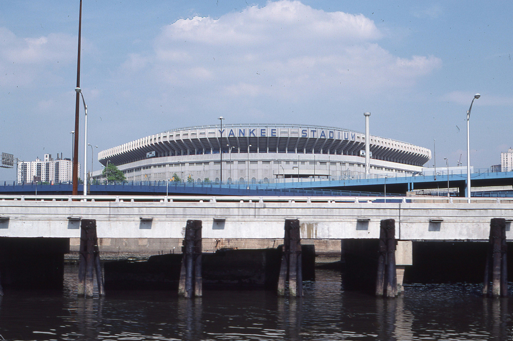

Yankee Stadium
Yankee Stadium, located in the Bronx, is the home field of the New York Yankees baseball team and New York City FC soccer team.

About
Built: Originally opened in April 1923, the stadium became legendary for baseball milestones, World Series games, and other major events in American sports history. It served as the home field of the New York Yankees for generations and was known as “The House That Ruth Built” after Babe Ruth, a famous Yankee player.
Today: The original stadium was replaced in 2009 by a new stadium of the same name that paid homage to the original in many of its design elements. The new 46,543 seat stadium mimics the old stadium both in the exterior design and the playing field while adding modern amenities.
More Info
Directions
Go to 1 East 161st Street in the Bronx. Check your ticket for the correct entrance.